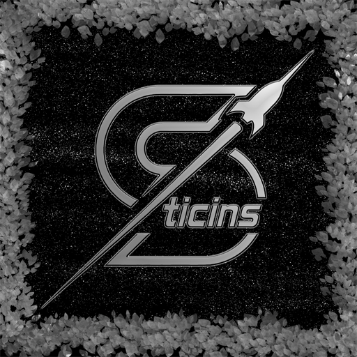
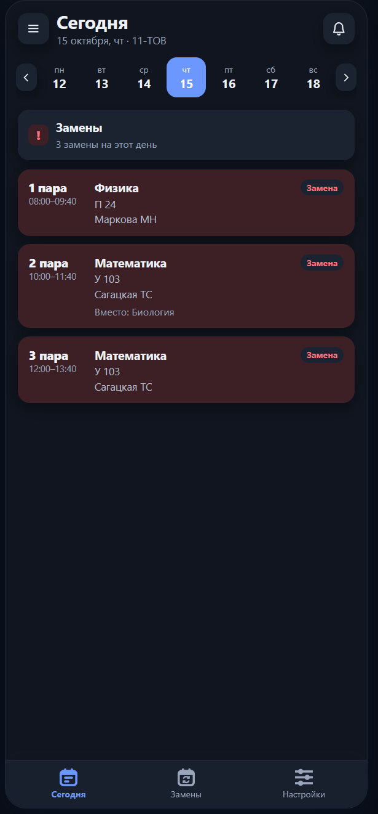
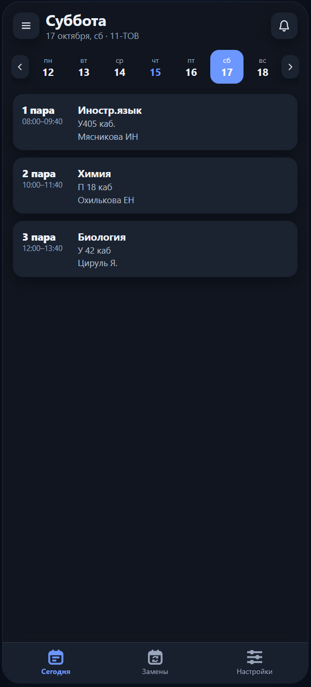
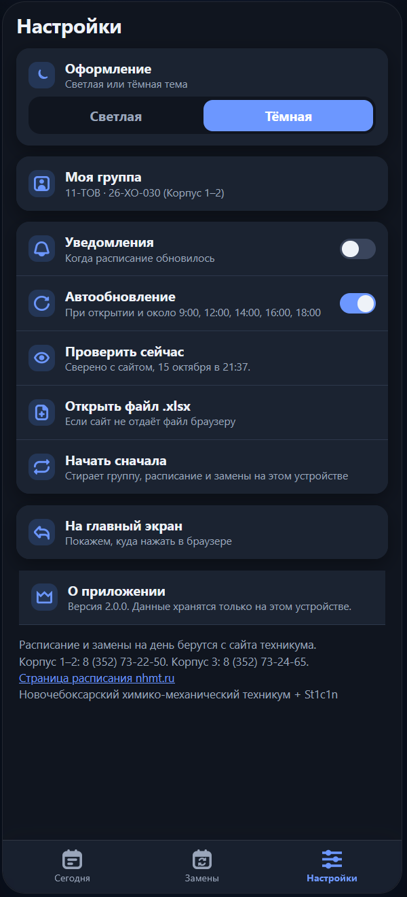
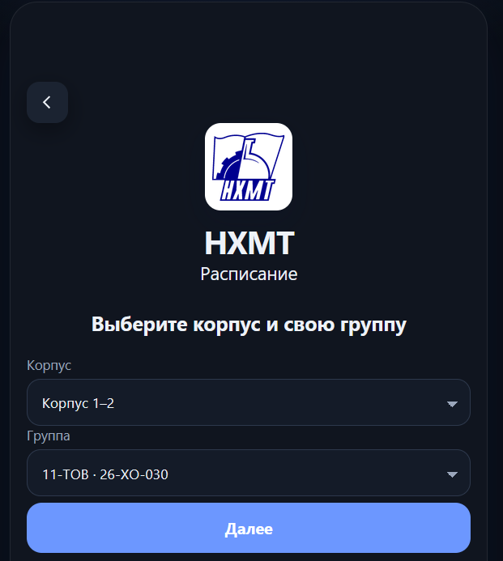

1
Своя группа
Корпус 1–2 или корпус 3, короткое имя и код. Неделя листается на прошлую и следующую. Если в ячейке две подгруппы, они показаны отдельно.

Корпуса 1–2 и 3 · Телефон и компьютер
Приложение читает открытые файлы Новочебоксарского химико-механического техникума и показывает день выбранной группы: пара, время, предмет, кабинет и преподаватель. Замены с сайта подсвечиваются в той же карточке.

Файл расписания на сайте техникума — таблица всего корпуса. Здесь остаётся только ваша группа и сегодняшний день.
Корпус 1–2 или корпус 3, короткое имя и код. Неделя листается на прошлую и следующую. Если в ячейке две подгруппы, они показаны отдельно.
Лист с zamena.nhmt.ru попадает в карточку пары: значок «Замена» и строка «Вместо». Практика выносится отдельно. Свою замену можно добавить вручную.
Без аккаунта. Группа, расписание и замены хранятся в браузере. Если сети нет, показывается сохранённая копия. Уведомление приходит, когда файл на сайте обновился.
Четыре экрана версии 2.0.0. Интерфейс приложения на русском.



Сравниваем не «с другим колледжем», а с тем, как пару ищут сейчас: в xlsx на nhmt.ru и в листе замен.
| Файл на nhmt.ru | Лист замен | Расписание НХМТ | |
|---|---|---|---|
| Что открывается | Таблица всего корпуса | Все группы одним листом | День вашей группы |
| Замены | Отдельным файлом | Нужно найти свою строку | В карточке пары, со строкой «Вместо» |
| Практика | В общем файле замен | Среди остальных строк | Баннер и отдельная карточка |
| Телефон | Широкая таблица | Широкая таблица | Экран дня и значок на главном |
| Без сети | Файл нужно скачать заранее | Файл нужно скачать заранее | Показывается сохранённая копия |
| Обновление | Скачать xlsx снова | Открыть новый лист | При открытии, по часам и кнопкой «Проверить сейчас» |
Реальные сценарии в техникуме: утро перед парами, день с заменой, практика и телефон в той же Wi‑Fi.
Открыли «Сегодня» — видны номер пары, время, кабинет и преподаватель. Листать неделю можно на одну назад и на одну вперёд.
Баннер говорит, сколько замен на этот день. После «Заменить расписание» пара остаётся со значком, а строка «Вместо» показывает, что стояло в сетке.
Если группа на практике, это отдельная карточка со сроком, а не строка, которую надо вычитать из общего листа.
Пока на компьютере открыт «Запуск.bat», телефон в той же сети Wi‑Fi открывает адрес из окна сервера. В настройках есть «На главный экран».
Техникум и так публикует расписание. Приложение не заменяет сайт, а читает те же файлы.
Если нужен не второй просмотр Excel, а одна группа на один день — экран собирает сетку, замены и практику вместе.
Это локальное приложение. Отдельного установщика нет: на компьютере нужен Python 3 и файл «Запуск.bat» из папки программы.
Если Python не установлен, «Запуск.bat» напишет об этом и остановится.
Откройте папку приложения и запустите этот файл. Окно сервера не закрывайте. Остановка — Ctrl+C.
Страница откроется сама: http://127.0.0.1:4173. Файл index.html напрямую браузер не поднимет как приложение.
Выберите корпус 1–2 или корпус 3 и свою группу. Потом это меняется в «Настройках».
Компьютер и телефон в одной сети Wi‑Fi. В окне сервера будет адрес вида http://192.168.x.x:4173. Его открывают в браузере телефона и ставят значок через «На главный экран».
Запустите папку приложения на компьютере, выберите группу и откройте тот же адрес с телефона. Расписание берётся с сайта техникума, копия остаётся в браузере.